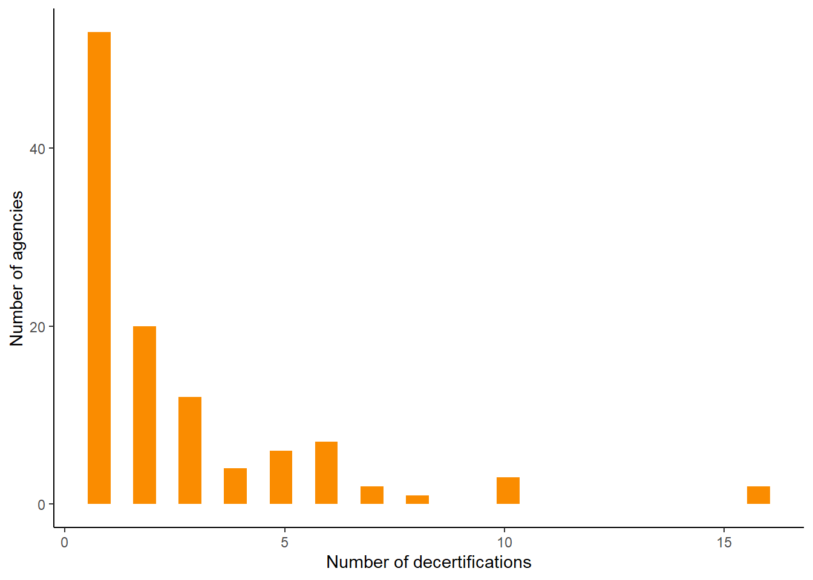

1: “After decades when few law enforcement officers in Virginia lost the right to wear a badge…” or “once an exceptionally rare punishment”
Four officers were decertified from 1999 to 2011. See bar chart below.
2: “…dramatic increases” or “dramatic jump” or “the large increase in decertifications”
Before the law change, the highest year was 17. After law change, each year has been 50 or more. See bar chart.
3: “Decertifications of Virginia law enforcement officers have jumped fourfold since lawmakers enacted reforms during the 2020 push for police accountability, according to a data analysis by the Virginia Center for Investigative Journalism at WHRO and MuckRock.”
“… jumped fourfold…” —> 2021-2024 average \((50+81+94+81)/4 = 76.5\), 2020 = 17; \(76/17 = 4.47\). See bar chart.
4: “Decertifications-or the revocation of a person’s authority to serve as an officer-have averaged about 80 cases annually since the reforms were enacted in 2021.”
“… have averaged about 80 cases annually…” —> \((50+81+94+81)/4 = 76.5\)
6: “In the prior two decades, the highest number of officers decertified statewide per year was only 17…”
See chart below.
7: “Between 1999 and 2011, just four officers in Virginia lost their certifications.”
See chart below
In vis annotation: “From 1999 to 2009, only three officers were decertified.”
See chart below
Visualization in the article
9: “There are almost 25,000 certified law enforcement officers among the state’s police departments, sheriff’s offices and jails …”
Sum of all certified officers in table below = 24,980
Data table of certified officers
What agencies decertify the most officers?
Most agencies haven’t decertified an officer since law change
Sentences in the article
10: “… most agencies haven’t decertified a single officer since the law changed.”
“Most agencies…” —> in data table below \(263/373 = 0.705\) or about 70% and trend visualized in chart below (this chart will not be included in article)
11: “More than 260 agencies have not decertified any officers.”
263 agencies that have a certified officer as of March 2025 have not decertified an officer
12: “Of the agencies that have decertified officers, about half used the process just once.”
56 agencies decertified one officer, 61 decertified more than one; \(56/115 = 0.48\) or 48%
Histogram of agencies and decertifications

Data table of number of agencies to number decertifications
Some agencies have decertified a handful of officers or more
Setences in the article
8: “Five agencies have decertified more than ten officers: Virginia State Police, Chesapeake Police Department, Henrico County Sheriff’s Office, Fairfax County Police Department and Fairfax County Sheriff’s Office.”
Virginia State Police (16), Chesapeake (16), Henrico County SO (10), Fairfax County PD (10), Fairfax County SO (10). See data table below.
13: “The Virginia State Police employs more officers than any other agency…”
Virginia State Police certified officers or jailors = 1,788. See data table below.
14: “The Virginia State Police … has decertified the highest number of officers - 16 - since the 2020 reforms were enacted.”
State police have decertified 16 officers, along with Chesapeake PD. See table below.
15: “But the Chesapeake Police Department has 331 officers, just a fifth the size of the state police…”
“… a fifth the size …” —> \(331/1788 = 0.185\) or about 20%, a fifth. See data table below.
16: “But the Chesapeake Police Department … has also decertified as many officers - 16 - as the state police.”
See data table below.
23: “Meanwhile, two of the state’s largest agencies, Loudoun County Sheriff’s Office and Virginia Beach Police Department …”
Loudon is the sixth largest force and Virginia Beach Police is the third. See data table below.
24: “Loudoun County Sheriff’s Office and Virginia Beach Police Department… have just two decertifications each.”
See data table below.
Data table of number of decertifications and number of certified officers in each agency
17: “Chesapeake Police Department … decertified only two officers in the two decades before the reforms.”
See data table below.
18: “The Henrico County Sheriff’s Office, which employs about 248 officers…”
See data table above of number of decertifications and number of certified officers in each agency.
19: “The Henrico County Sheriff’s Office … as decertified 10 members of the force since the new law went into effect.”
See data table above of number of decertifications and number of certified officers in each agency.
20: “Before 2021, the Henrico County Sheriff’s Office had not decertified a single office.”
See data table below; Henrico SO is not in table.
21: “Fairfax County Police Department, the second largest law enforcement agency in the state …”
Fairfax employs 1,270 officers, second only to state police. See table above.
22: “Fairfax County Police Department … has also decertified ten officers since the updated statute took effect.”
See table above.
Data table of agencies that decertfied an officer before law changed in 2021
Visualization in the article
What types of misconduct are most common?
The big change since 2021 is lying and falsifying information
Setences in the article
25: “Since the reforms, the leading reasons for decertifications have been giving untruthful statements during an internal affairs investigation or falsifying documents.”
The causes are difficult to group because small variations, but even a rough grouping shows that the most common causes with 91 and 34 cases respectively are lying during an IA investigation and falsifying documents. See table below.
26: “In Chesapeake, 14 of the 16 police officers lost their badges for lying…”
See table below.
27: “… all 10 deputies in the Henrico County Sheriff’s Office were decertified for lying.”
See table below.
Data table of number of decertifications by decertification reason
Data table of officer level decertifications for Chesapeake PD and Henrico SO
What about reinstatements?
Reinstatements are also increasing
Setences in the article
5: “Reinstatements of decertified officers have also risen.”
Reinstatements have increased each year since 2021. See table below.
28: “Reinstatements following appeals have also gradually increased since the new law took effect, reaching a high in 2024.”
See table below.
Data table of reinstatement totals by year
Source Code
---title: "Findings and data bulletproofing"author: "Dillon Bergin"date: "5/28/2025"execute: output: false echo: falseformat: html: code-tools: true theme: cosmo toc: true---```{r}library(tidyverse)library(here)library(janitor)library(ggplot2)library(plotly)library(DT)library(lubridate)``````{r}present <-read.csv(here("data", "processed","analysis", "present.csv")) %>%select(-X, -...1)prior <-read.csv(here("data", "processed","analysis", "prior.csv")) %>%select(-X, -...1)reinstated <-read.csv(here("data", "processed","analysis", "reinstated.csv")) %>%select(-X, -...1)certified_directory <-read.csv(here("data", "processed","analysis", "certified_directory.csv")) %>%select(-X)```# How have decertifications changed over time?## Decertifications increased after law change### Sentences in the article > 1: "After decades when few law enforcement officers in Virginia lost the right to wear a badge..." or "once an exceptionally rare punishment"- Four officers were decertified from 1999 to 2011. See bar chart below. > 2: "...dramatic increases" or "dramatic jump" or "the large increase in decertifications"- Before the law change, the highest year was 17. After law change, each year has been 50 or more. See bar chart.> 3: "Decertifications of Virginia law enforcement officers have jumped fourfold since lawmakers enacted reforms during the 2020 push for police accountability, according to a data analysis by the Virginia Center for Investigative Journalism at WHRO and MuckRock."- "... jumped fourfold..." ---> 2021-2024 average $(50+81+94+81)/4 = 76.5$, 2020 = 17; $76/17 = 4.47$. See bar chart.> 4: "Decertifications-or the revocation of a person's authority to serve as an officer-have averaged about 80 cases annually since the reforms were enacted in 2021."- "... have averaged about 80 cases annually..." ---> $(50+81+94+81)/4 = 76.5$> 6: "In the prior two decades, the highest number of officers decertified statewide per year was only 17..."- See chart below.> 7: "Between 1999 and 2011, just four officers in Virginia lost their certifications."- See chart below> In vis annotation: "From 1999 to 2009, only three officers were decertified."- See chart below```{r}# Dataframe that sums the total of number of decertifications for each year since law changeby_year_present <- present %>%mutate(year =year(fixed_date)) %>%group_by(year) %>%summarize(num =n()) %>%# Remove two cases, one from 2025 since we don't have enough data and one from 2029 that is data errorfilter(!year %in%c("2025", "2029"))# Calculate the average num of decertifications yearly since law change: 76.5mean_present <-mean(by_year_present$num)# Dataframe that sums the total of number of decertifications for each year before law changeby_year_prior <- prior %>%mutate(year =year(fixed_date)) %>%group_by(year) %>%summarize(num =n()) # Dataframe of all years of certifications for comparisonmerge_years <-rbind(by_year_present, by_year_prior) %>%# Fill in zero for years not included in data: 2001, 2002, 2003, 2004, 2006, 2007, 2008, 2009, 2011complete(year =seq(min(year), max(year), by =1),fill =list(num =0)) %>%arrange(desc(year)) %>%filter(year >=2010)# Export data to csv for Datawrapper chartwrite.csv(merge_years, "../data/processed/vis/all_years.csv")```### Visualization in the article<iframetitle="2020 law created a big shift in Virginia's police decertifications"aria-label="Bar Chart"id="datawrapper-chart-xH2TV"src="https://datawrapper.dwcdn.net/xH2TV/4/"scrolling="no"frameborder="0"style="width: 0; min-width: 100% !important; border: none;"height="765"data-external="1"></iframe><script type="text/javascript">!function(){"use strict";window.addEventListener("message",(function(a){if(void0!==a.data["datawrapper-height"]){var e=document.querySelectorAll("iframe");for(var t in a.data["datawrapper-height"])for(var r,i=0;r=e[i];i++)if(r.contentWindow===a.source){var d=a.data["datawrapper-height"][t]+"px";r.style.height=d}}}))}();</script>> 9: "There are almost 25,000 certified law enforcement officers among the state's police departments, sheriff's offices and jails ... "- Sum of all certified officers in table below = 24,980```{r}# Calculate the total number of certified officerstotal_certified_officers <-sum(certified_directory$certified_officers_jailors, na.rm =TRUE)```## Data table of certified officers ```{r}#| output: truedatatable(certified_directory, filter ='top', class ='cell-border stripe order-column', extensions ='Buttons',rownames =FALSE, options =list(paging =TRUE,searching =TRUE,fixedColumns =TRUE,autoWidth =TRUE,ordering =TRUE,dom ='tB',buttons =c('copy', 'csv', 'excel') ))```# What agencies decertify the most officers? ## Most agencies haven't decertified an officer since law change### Sentences in the article > 10: "... most agencies haven't decertified a single officer since the law changed."- "Most agencies..." ---> in data table below $263/373 = 0.705$ or about 70% and trend visualized in chart below (this chart will not be included in article)> 11: "More than 260 agencies have not decertified any officers."- 263 agencies that have a certified officer as of March 2025 have not decertified an officer > 12: "Of the agencies that have decertified officers, about half used the process just once."- 56 agencies decertified one officer, 61 decertified more than one; $56/115 = 0.48$ or 48%```{r}# Dataframe of total number of decertifications at each agency that has decertified an officer since 2021present_agency_totals <- present %>%group_by(agency_name) %>%summarize(decerts =n())# 139 agencies don't have a certified officer, we'll exclude these laterno_certified_officer <- certified_directory %>%filter(is.na(certified_officers_jailors))# Dataframe of all agencies that have and haven't had a decertification since 2021, excluding those that don't have a certified officer as of March 2025# Join to add decertifications column, NAs for zero decertifications certified_agencies <- certified_directory %>%filter(!is.na(certified_officers_jailors)) %>%left_join(present_agency_totals, join_by(place_of_employment == agency_name)) # Dataframe of total number of decertifications at each agency that has decertified an officer before 2021prior_agency_totals <- prior %>%group_by(agency_name) %>%summarize(num =n())extra_agencies <- present_agency_totals %>%anti_join(certified_agencies, join_by(agency_name == place_of_employment)) # Dataframe of agencies that haven't decertified an officer no_decertifications <- certified_agencies %>%filter(is.na(decerts)) # 512 number of agencies in directory# 139 number of agencies without a certified officer # 373 total agencies with at least one certified officer# 115 agencies have decertified since 2021# 263 no decertification # 5 agencies that did not have a certified officer as of March 2025, but did show up in our decertifications list# ^ is the reason we have 263 with no decertification and not 258```## Histogram of agencies and decertifications ```{r}#| output: trueggplot(certified_agencies, aes(x=decerts)) +geom_histogram(fill ="#fa8c00", boundary =0) +labs(x ="Number of decertifications",y ="Number of agencies") +theme_classic()``````{r}# Agencies with at least one certified officer at_least_one_certified_agencies <- certified_directory %>%filter(!is.na(certified_officers_jailors))# Dataframe of number of decertifications grouped by how many agencies decertified that many officersdecert_bins <- present_agency_totals %>%full_join(at_least_one_certified_agencies, join_by(agency_name == place_of_employment)) %>%group_by(decerts) %>%rename(num_decerts = decerts) %>%summarize(num_agencies =n())# Dataframe of agencies that decertified more than one officer greater_than_one_decert <- decert_bins %>%filter(num_decerts >1)total_greater_than_one <-sum(greater_than_one_decert$num_decerts)```## Data table of number of agencies to number decertifications ```{r}#| output: truedatatable(decert_bins, filter ='top', class ='cell-border stripe order-column', extensions ='Buttons',rownames =FALSE, options =list(paging =TRUE,searching =TRUE,fixedColumns =TRUE,autoWidth =TRUE,ordering =TRUE,dom ='tB',buttons =c('copy', 'csv', 'excel') ))```## Some agencies have decertified a handful of officers or more### Setences in the article > 8: "Five agencies have decertified more than ten officers: Virginia State Police, Chesapeake Police Department, Henrico County Sheriff's Office, Fairfax County Police Department and Fairfax County Sheriff's Office."- Virginia State Police (16), Chesapeake (16), Henrico County SO (10), Fairfax County PD (10), Fairfax County SO (10). See data table below. > 13: "The Virginia State Police employs more officers than any other agency..."- Virginia State Police certified officers or jailors = 1,788. See data table below. > 14: "The Virginia State Police ... has decertified the highest number of officers - 16 - since the 2020 reforms were enacted."- State police have decertified 16 officers, along with Chesapeake PD. See table below. > 15: "But the Chesapeake Police Department has 331 officers, just a fifth the size of the state police..."- "... a fifth the size ... " ---> $331/1788 = 0.185$ or about 20%, a fifth. See data table below. > 16: "But the Chesapeake Police Department ... has also decertified as many officers - 16 - as the state police."- See data table below. > 23: "Meanwhile, two of the state's largest agencies, Loudoun County Sheriff's Office and Virginia Beach Police Department ..."- Loudon is the sixth largest force and Virginia Beach Police is the third. See data table below. > 24: "Loudoun County Sheriff's Office and Virginia Beach Police Department... have just two decertifications each."- See data table below. ```{r}# Dataframe that combines number of decertifications with number of certified officers and compares rank and percentile rank, for agencies that have decertified an officerpresent_agency_totals_cert <- present_agency_totals %>%left_join(certified_directory, join_by(agency_name == place_of_employment)) %>%select(agency_name, num_decerts = decerts, certified_officers_jailors) %>%mutate(percentile_decert =round(rank(num_decerts, ties.method ="min") /nrow(present_agency_totals) *100, digits =2)) %>%mutate(size_rank =rank(-certified_officers_jailors, ties.method ="min")) %>%mutate(percentile_size =round(rank(certified_officers_jailors, ties.method ="min") /nrow(present_agency_totals) *100, digits =2)) %>%mutate(decert_rank =rank(-num_decerts, ties.method ="min"))# Dataframe that combines decertifications with certified officers and compares rank, for all 513 agences, not just those that have decertified certified_agencies_totals <- certified_agencies %>%rename(agency_name = place_of_employment) %>%select(agency_name, num_decerts = decerts, certified_officers_jailors) %>%mutate(size_rank =rank(-certified_officers_jailors, ties.method ="min")) %>%mutate(decert_rank =rank(-num_decerts, ties.method ="min"))# Dataframe of top ten agencies have decertified and officer for Datawrapper chartfive_or_over <- present_agency_totals_cert %>%filter(num_decerts >=5)top_ten <- present_agency_totals_cert %>%slice_max(order_by = num_decerts, n =10)# Writing data to csv for Datawrapperwrite.csv(five_or_over, "../data/processed/vis/agencies_five_or_over.csv")write.csv(top_ten, "../data/processed/vis/top_ten.csv")write.csv(present_agency_totals_cert, "../data/processed/vis/all_agencies_total_cert.csv")```## Data table of number of decertifications and number of certified officers in each agency```{r}#| output: truedatatable(certified_agencies_totals, filter ='top', class ='cell-border stripe order-column', extensions ='Buttons',rownames =FALSE, options =list(paging =TRUE,searching =TRUE,fixedColumns =TRUE,autoWidth =TRUE,ordering =TRUE,dom ='tB',buttons =c('copy', 'csv', 'excel') ))```> 17: "Chesapeake Police Department ... decertified only two officers in the two decades before the reforms."- See data table below. > 18: "The Henrico County Sheriff's Office, which employs about 248 officers..."- See data table above of number of decertifications and number of certified officers in each agency.> 19: "The Henrico County Sheriff's Office ... as decertified 10 members of the force since the new law went into effect."- See data table above of number of decertifications and number of certified officers in each agency.> 20: "Before 2021, the Henrico County Sheriff's Office had not decertified a single office."- See data table below; Henrico SO is not in table.> 21: "Fairfax County Police Department, the second largest law enforcement agency in the state ..."- Fairfax employs 1,270 officers, second only to state police. See table above. > 22: "Fairfax County Police Department ... has also decertified ten officers since the updated statute took effect."- See table above. ```{r}# Dataframe of decertifications by agency prior to 2021by_agency_prior <- prior %>%group_by(agency_name) %>%summarize(num =n()) ```## Data table of agencies that decertfied an officer before law changed in 2021```{r}#| output: truedatatable(by_agency_prior, filter ='top', class ='cell-border stripe order-column', extensions ='Buttons',rownames =FALSE, options =list(paging =TRUE,searching =TRUE,fixedColumns =TRUE,autoWidth =TRUE,ordering =TRUE,dom ='tB',buttons =c('copy', 'csv', 'excel') ))```### Visualization in the article <iframetitle="Despite differences in size, some departments have decertified several officers since law changed"aria-label="Table"id="datawrapper-chart-JifBU"src="https://datawrapper.dwcdn.net/JifBU/3/"scrolling="no"frameborder="0"style="width: 0; min-width: 100% !important; border: none;"height="400"data-external="1"></iframe><script type="text/javascript">!function(){"use strict";window.addEventListener("message",(function(a){if(void0!==a.data["datawrapper-height"]){var e=document.querySelectorAll("iframe");for(var t in a.data["datawrapper-height"])for(var r,i=0;r=e[i];i++)if(r.contentWindow===a.source){var d=a.data["datawrapper-height"][t]+"px";r.style.height=d}}}))}();</script># What types of misconduct are most common?## The big change since 2021 is lying and falsifying information### Setences in the article > 25: "Since the reforms, the leading reasons for decertifications have been giving untruthful statements during an internal affairs investigation or falsifying documents."- The causes are difficult to group because small variations, but even a rough grouping shows that the most common causes with 91 and 34 cases respectively are lying during an IA investigation and falsifying documents. See table below. > 26: "In Chesapeake, 14 of the 16 police officers lost their badges for lying..."- See table below. > 27: "... all 10 deputies in the Henrico County Sheriff's Office were decertified for lying."- See table below. ```{r}# Dataframe of grouped reasons for certifications type <- present %>%group_by(reason) %>%summarize(decerts =n()) # Decertifications at Chesapeake and Henrico as example type_henrico_chesapeake <- present %>%filter(agency_name %in%c("Chesapeake Police Department", "Henrico County Sheriff's Office")) ```## Data table of number of decertifications by decertification reason```{r}#| output: truedatatable(type, filter ='top', class ='cell-border stripe order-column', extensions ='Buttons',rownames =FALSE, options =list(paging =TRUE,pageLength =10,lengthMenu =c(5, 10, 25, 50),searching =TRUE,fixedColumns =TRUE,autoWidth =TRUE,ordering =TRUE,dom ='tB',buttons =c('copy', 'csv', 'excel') ))```## Data table of officer level decertifications for Chesapeake PD and Henrico SO ```{r}#| output: truedatatable(type_henrico_chesapeake, filter ='top', class ='cell-border stripe order-column', extensions ='Buttons',rownames =FALSE, options =list(paging =TRUE,pageLength =10,lengthMenu =c(5, 10, 25, 50),searching =TRUE,fixedColumns =TRUE,autoWidth =TRUE,ordering =TRUE,dom ='tB',buttons =c('copy', 'csv', 'excel') ))```# What about reinstatements?## Reinstatements are also increasing### Setences in the article > 5: "Reinstatements of decertified officers have also risen."- Reinstatements have increased each year since 2021. See table below. > 28: "Reinstatements following appeals have also gradually increased since the new law took effect, reaching a high in 2024." - See table below. ```{r}# Dataframe of reinstatements by yearreinstated_year <- reinstated %>%mutate(year =year(recert_date)) %>%group_by(year) %>%summarize(number =n())```## Data table of reinstatement totals by year```{r}#| output: truedatatable(reinstated_year, filter ='top', class ='cell-border stripe order-column', extensions ='Buttons',rownames =FALSE, options =list(paging =TRUE,pageLength =10,lengthMenu =c(5, 10, 25, 50),searching =TRUE,fixedColumns =TRUE,autoWidth =TRUE,ordering =TRUE,dom ='tB',buttons =c('copy', 'csv', 'excel') ))```